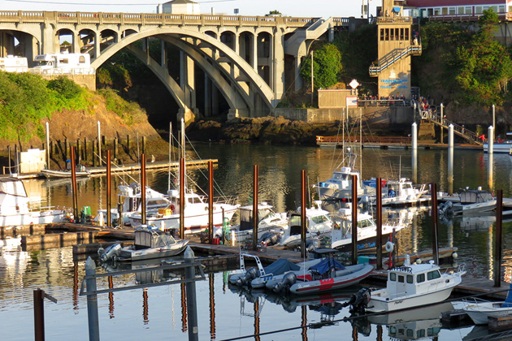

One Flew Over The Cuckoo's Nest
Main Content

Author Ken Kesey wasn't too impressed with the filming of his novel (he's refused to watch the film and even sued the makers for distorting his message), but the Academy loved the movie and awarded it all five top Oscars.
It was shot in a wing of the Oregon State Mental Hospital, 2600 Center Street between 24th and 25th Streets, Salem, on Hwy-5 about 50 miles south of Portland, Oregon. A condition of filming at the hospital was that the period not be updated from the original 1963 (we don’t treat people like that any more).
The wing used, J Building, has since been demolished, though props from the movie are displayed in the Museum of Mental Health located on the premises.
The fishing trip filmed at Depoe Bay, on I-101, about 12 miles north of Newport, which claims the smallest harbour in the world. And, yes, you can charter a fishing boat here.
Visit Info
Visit The Film Locations
Oregon
Visit: Oregon